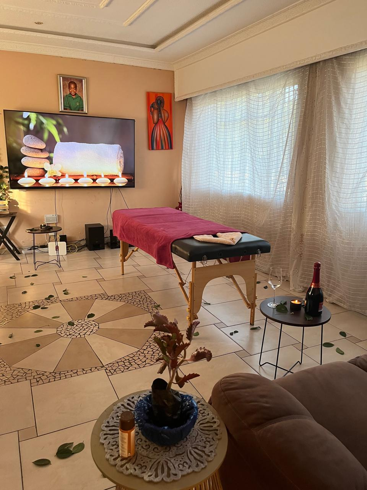
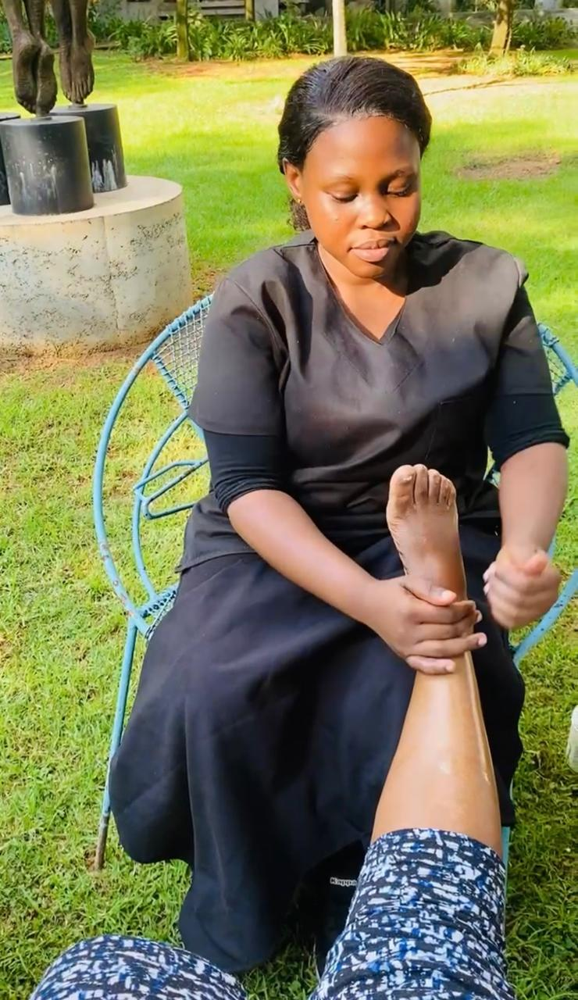
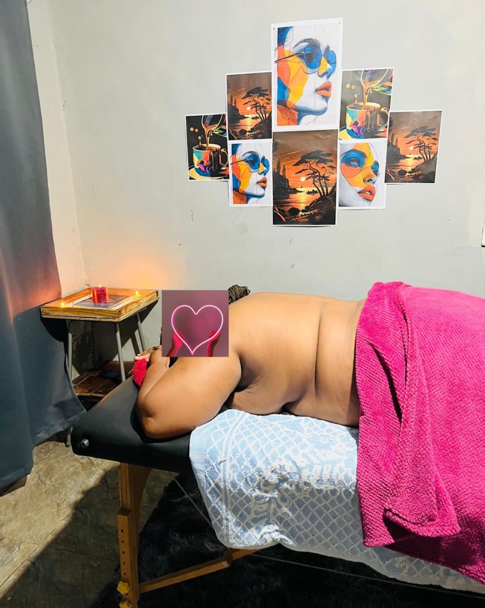
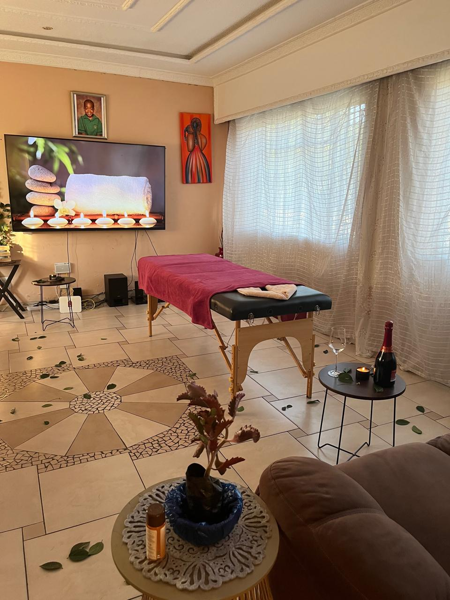
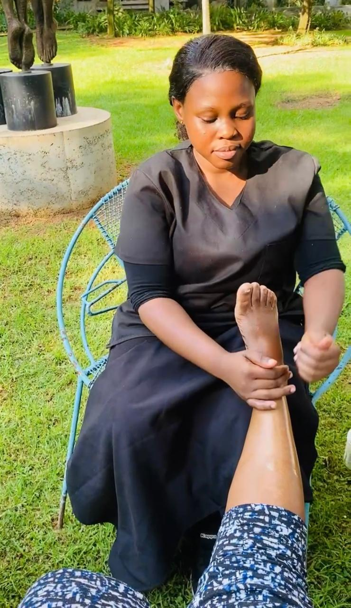
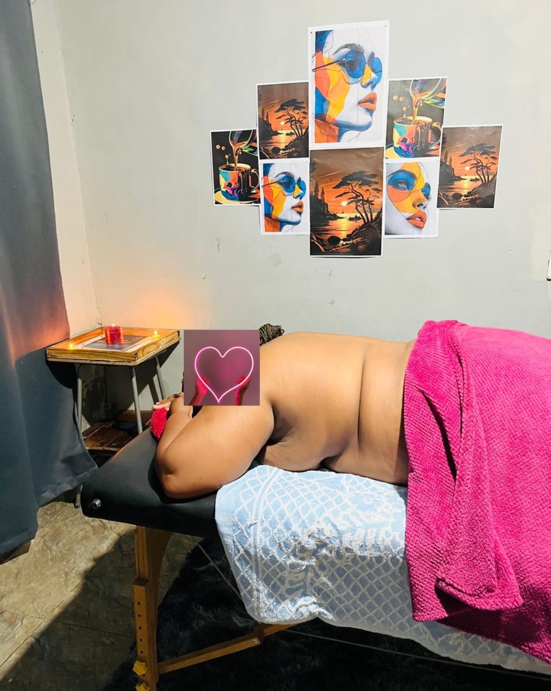

Somatime Wellness and Therapy
Holistic Care for Body, Mind, and Skin
Holistic Care for Body, Mind, and Skin
At Somatime Wellness and Therapy, we redefine holistic well-being by merging the science of therapeutic healing with the art of deep relaxation and skincare rejuvenation. Our expertise in Somatic Therapy, Massage Therapy, and Advanced Skin Treatments is designed to restore balance, enhance vitality, and promote radiant health.
Conveniently located in Ekangala, we also offer a mobile spa service in Bronkhorstspruit and surrounding areas.


 





We offer competitive pricing and customizable wellness packages. Contact us for detailed pricing, special offers, and membership benefits.